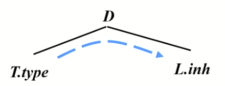
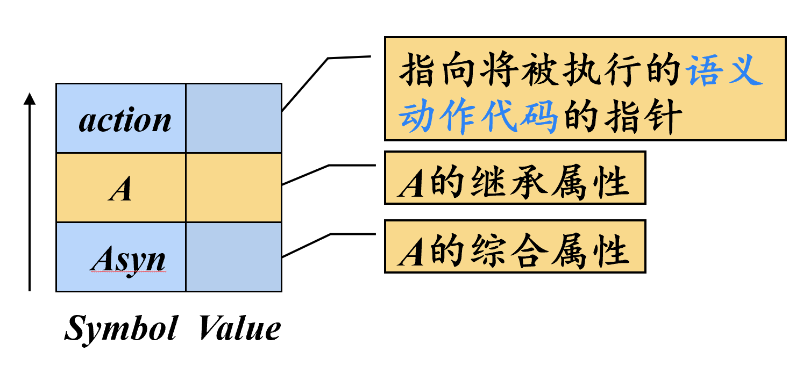
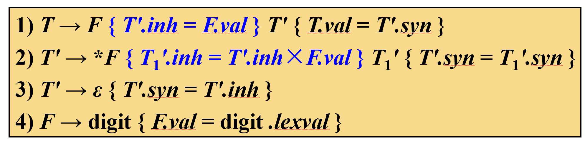
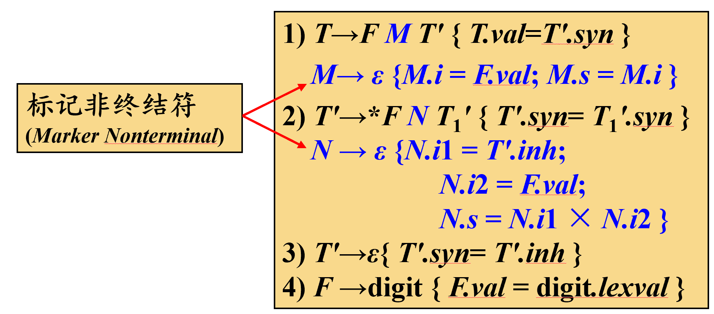
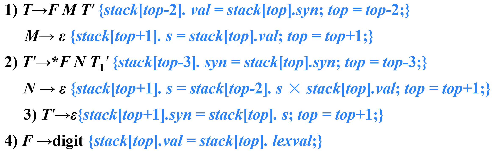

句法制导翻译
句法制导定义SDD¶
- 句法制导定义SDD是对CFG的推广
- 将每个文法符号和一个语义属性集合相关联
- 将每个产生式和一组语义规则相关联，用来计算该产生式中各文法符号的属性值
综合属性¶
在分析树结点N上的非终结符A的综合属性只能通过N的子结点或N本身的属性值来定义
终结符可以具有综合属性。终结符的综合属性值是由词法分析器提供的词法值，因此在SDD中没有计算终结符属性值的语义规则
继承属性¶
在分析树结点N上的非终结符A的继承属性只能通过N的父节点、N的兄弟节点、N本身的属性值来定义
例：
| 产生式 | 语义规则 |
|---|---|
| D→TL | L.inh = T.type |

规定终结符没有继承属性，终结符从词法分析器获得的属性值被归为综合属性值
属性文法¶
一个没有副作用的SDD有时也称为属性文法
属性文法的规则仅仅通过其它属性值和常量来定义一个属性值
SDD的求值顺序¶
属性值的求值顺序¶
可行的求值顺序是满足下列条件的\(N_1,N_2,...,N_k\)：若依赖图中有一条从\(N_i\)到\(N_j\)的边，那么\(i<j\)
这样的排序将一个有向图变成了一个线性排序，这个排序称为这个图的拓扑排序(topological sort)
对于只具有综合属性的SDD ，可以按照任何自底向上的顺序计算它们的值
对于同时具有继承属性和综合属性的SDD，不能保证存在一个顺序来对各个节点上的属性进行求值
从计算的角度看，给定一个SDD，很难确定是否存在某棵句法分析树，使得SDD的属性之间存在循环依赖关系。幸运的是，存在一个SDD的有用子类，它们能够保证对每棵句法分析树都存在一个求值顺序，因为它们不允许产生带有环的依赖图。不仅如此，有两类SDD可以和自顶向下及自底向上的句法分析过程一起高效地实现:L-SDD和S-SDD。
L-SDD与S-SDD¶
- S-SDD(Simple-SDD)
- 仅仅使用综合属性的SDD称为S属性的SDD
- L-SDD(Left-SDD)
- 一个属性定义是L-SDD，当且仅当它的每个属性要么是一个综合属性，要么是满足如下条件的继承属性：假设存在一个产生式\(A→X_1X_2…X_n\)，其右部符号\(X_i\) (1 ≤ i ≤ n)的继承属性仅依赖于下列属性：
- A的继承属性（不能是综合属性，直接根除了子结点与根结点之间的依赖形成环路的可能）
- 产生式中\(X_i\)左边的符号\(X_1, X_2, … , X_{i-1}\)的属性
- \(X_i\)本身的属性，但\(X_i\)的全部属性不能在依赖图中形成环路
- 一个属性定义是L-SDD，当且仅当它的每个属性要么是一个综合属性，要么是满足如下条件的继承属性：假设存在一个产生式\(A→X_1X_2…X_n\)，其右部符号\(X_i\) (1 ≤ i ≤ n)的继承属性仅依赖于下列属性：
L-SDD的直观理解：在一个产生式所关联的各属性之间，依赖图的边可以从左到右，但不能从右到左
句法制导翻译方案SDT¶
定义：句法制导翻译方案(SDT)是在产生式右部中嵌入了程序片段(称为语义动作)的CFG
此处关注如何使用SDT实现上述两种SDD
- 基本文法可以使用LR分析技术，且SDD是S属性的
- 基本文法可以使用LL分析技术，且SDD是L属性的
SDD转换为SDT¶
- S-SDD
- 将每个语义动作都放在产生式最后
如果一个S-SDD的基本文法可以使用LR分析技术，那么它的SDT可以在LR句法分析过程中实现
- L-SDD
- 对于综合属性，将其放在产生式最后
- 对于某个非终结符A的继承属性的动作插入到产生式右部中紧靠在A的本次出现之前的位置上
如果一个L-SDD的基本文法可以使用LL分析技术，那么它的SDT可以在LL或LR句法分析过程中实现
在非递归的预测分析过程中进行翻译¶
扩展句法分析栈¶

A的继承属性放在A本身的记录当中；由于A的综合属性产生的时间不同，所以放在Asyn中；此外还有记录语义动作代码的指针
- 综合属性出栈时，要将综合属性值复制给后面特定的语义动作（如果有需要）
- 变量展开时（即变量本身的记录出栈时），如果其含有继承属性，则要将继承属性值复制给后面特定的语义动作（位于即将扩展的产生式右部）
L-属性定义的自底向上翻译¶
给定一个以LL文法为基础的L-SDD，可以修改这个文法，并在LR句法分析过程中计算这个新文法之上的SDD
具体步骤¶
- 首先构造SDT，在各个非终结符之前放置语义动作来计算它的继承属性， 并在产生式后端放置语义动作计算综合属性
- 对每个内嵌的语义动作，向文法中引入一个标记非终结符(例如M)来替换它。每个这样的位置都有一个不同的标记，并且对于任意一个标记\(M\)都有一个产生式\(M→ε\)
- 如果标记非终结符M在某个产生式\(A→α\{a\}β\)中替换了语义动作\(a\)，对\(a\)进行修改得到\(a'\) ，并且将\(a'\)关联到\(M→ε\)上。
语义动作\(a'\)需要：
- 将动作\(a\)需要的A或α中符号的任何属性作为M的继承属性进行复制
- 按照\(a\)中的方法计算各个属性，但是将计算得到的这些属性作为M的综合属性
举例¶

使用标记非终结符替换内嵌的语义动作

最终目的是让所有的语义动作都位于产生式末尾
将语义动作转化为可执行的栈操作
